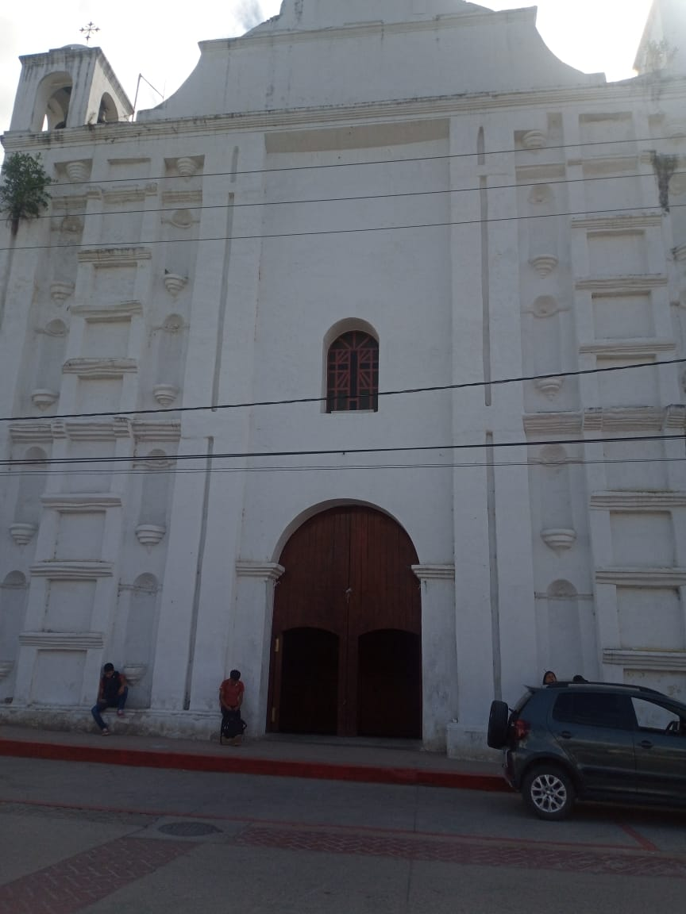

Misión San Jacinto de Polonia es una iglesia católica fundada en 1548 en la que tenemos el único propósito de cumplir los cuidados parroquiales de los fieles en Ocosingo, Chiapas. Tenemos una amplia experiencia ayudado a la comunidad y brindando servicios parroquiales a quien lo necesita.
Estamos conformados por un párroco católico, encargados de distintas asociaciones y gente voluntaria que logran que todos los días la Misión San Jacinto de Polonia pueda continuar cumplir su objetivo en el poblado de Ocosingo.
Les ofrecemos a tus hijos la manera más sencilla de acercarse a Jesús a través de nuestro catecismo. También contamos con catecismo para personas de cualquier edad; Te invitamos a preguntar por nuestros horarios y los demás servicios que brindamos.
Inicio
Construido en el siglo XIX, en su fachada sencilla se observan elementos góticos
Las torres campanarias
Las torres campanarias sobresalen al parametro de la fachada, en la izquierda se adosa el volumen de las escaleras que es de forma cilíndrica, el inmueble es rematado por una espadaña con una ventana al centro sin albergar campana, a sus extremos es rematado por almenas que son la terminación de las pilastras ya mencionadas, todos los relieves son en color rojo, al suroeste se localiza la sacristía, catorce pasos frente al templo sobrevive una Ceiba, la fachada por la calle Negrete presenta primeramente la torre campanaria y tres vanos de ventana a manera de ajimez.Construido en el siglo XIX, en su fachada sencilla se observan elementos góticos
